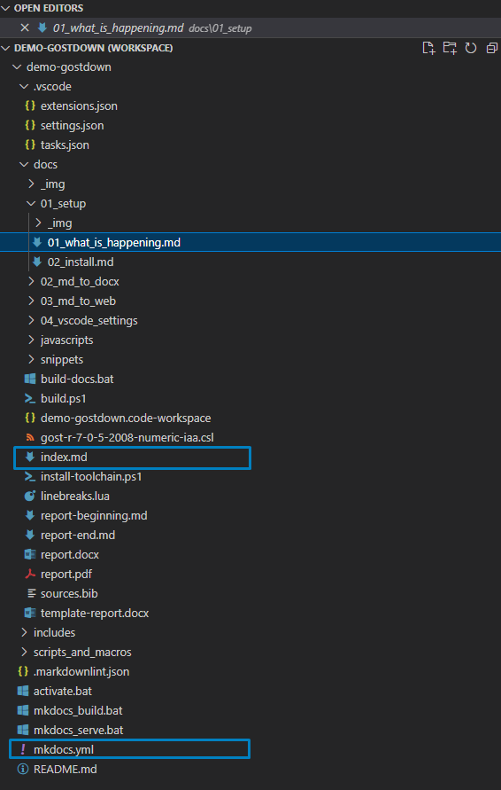

Собираем веб-доку#
Превью и html#
Сборка выполняется üåêmkdocs-material, и по ссылке можно найти очень подробную документацию как сделать что угодно. Кроме того, mkdocs поддерживает огромное количество всяких плагинов, так что если что-то надо сделать необычное -- скорее всего на это уже есть плагин. Кроме того, из mkdocs можно собирать PDF, хотя пока что мне это не пригодилось, поэтому инструкции не будет).
У Mkdocs есть требования к структуре (рисунок ):
- должна быть папка
/docs, в которой все лежит; - в папке
/docsдолжен бытьindex.mdфайл; - файлы .bib и .csl для источников также должны быть расположены относительно mkdocs.yml.

В конфигурационном файле mkdocs.yml описана структура и плагины.
В основном нужно редактировать четыре верхние строки (для нового проекта) и раздел nav.
В разделе nav указаны пункты левого меню и файлы md, которые будут рендерится, когда перейдешь в это меню.
Включите в своем редакторе отображение пробелов, так как yml очень капризен к отступам.
Собираем документ. В директории, где лежит mkdocs yml выполнить команду: mkdocs serve.
Эта команда запустит маленький веб-сервер на 127.0.0.1:8000 и будет показывать наш сайт с докой.
Если нужно собрать html из доки, нужно выполнить команду: mkdoc build.